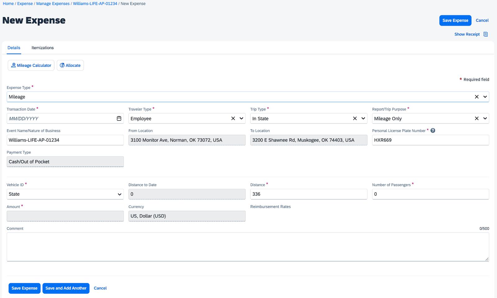

Visit each of the following tabs of expense types to learn more about the processes associated with each.
HOW TO ADD MILEAGE AS AN EXPENSE TYPE
1. Select Mileage and enter the Waypoints (event/meeting location addresses) for one day of travel.
a. Waypoint A is the starting location. Each Waypoint after is the address location for each event/meeting. These Waypoints/Addresses will correspond to TREK events.
Determining the starting location for mileage, home or office address:
- If leaving from the office, use the office address: 3100 Monitor Ave, Norman, OK 73072
- If leaving from your house on a remote workday, use your personal address. Add a note in the comments that it was a remote workday and would not require a commute to the office.
- If you would normally start your day at the office, but you left from your house:
- enter the address and deduct your commute or
- use the shorter of the two distances in your report so the starting location is the closer location to Waypoint B.
In the comment box, add a note if your home was the starting location.
Use the table below to help determine which address to use for your starting location.
|
Actual Starting Location |
Workday Location |
What do you enter in Concur for Waypoint A? |
Must Enter the Following Comment |
|---|---|---|---|
|
Office |
In-Office |
Enter the office address: |
No comment required |
|
Home |
In-Office |
Two options: b. Use the shorter of the two distances in your report so the starting location is closer to Waypoint B. |
I left from my home address, and it is the shorter distance to the meeting location. |
|
Office |
Remote |
Enter the office address: |
No comment required |
|
Home |
Remote |
Enter your personal address. |
It was a remote workday and would not require a commute to the office on OU’s campus. |
b. Addresses entered must accurately match the location of each event.
Examples of valid address Waypoint entries:

Examples of invalid address Waypoint entries:
- The Concur system will accept inaccurate addresses. It is the reporter's responsibility to submit a full accurate address. Your supervisor, the OU Grants office, and other OU Concur reviewers/approvers will return your report for inaccurate address reporting. This increases the timeframe to receive reimbursement.
- Some rural addresses may not populate in Concur. If this happens, add a comment to that mileage expense with the actual address and a note that the Concur system does not recognize the address.
2. Enter Waypoint B and click Calculate Route.

3. Enter remaining Waypoints or click Make Round Trip.
Example:
4. Click the Deduct Commute box if leaving from your house on an in-office workday.

5. After all Waypoints are entered for the travel date, click Add Mileage to Expense.
Example of a single meeting location in one day:
Example of multiple meeting locations in one day:
Do not combine multiple travel dates into one mileage expense. Each travel date MUST be represented independently.
6. Enter the Report Details:
- Expense Type: Auto-populates from your previous selection. This can be changed if the wrong expense type was previously selected.
- Transaction Date: Enter the date of travel. If this field automatically updates, confirm that the date accurately reflects the date for mileage reported. Note: Concur uses the date most recently entered on any new expense report.
- Traveler Type: Confirm that Employee is selected
- Trip Type: Confirm that In State is selected
- Report/Trip Purpose: Confirm Mileage Only is selected
- Event Name/Nature of Business: Confirm the Event Name (LastName-Grant-Project-TREK#) is correct
- Note: If any of these are incorrect, you will need to Save Expense and edit the Report Header located under the Report Details drop-down menu.
- Personal License Plate Number: Enter or confirm the number is correct for the vehicle driven.
- Payment Type: Will automatically select Cash/Out of Pocket. This indicates that the employee will be reimbursed for expenses.
- Vehicle ID: Confirm it is listed as State.
- Note: If this is incorrect, Save Expense and edit your personal vehicle information in your Concur Profile.
- Distance: This field will automatically update from the Waypoints you previously entered.
- To update any of your Waypoints, click on the Mileage Calculator located on the upper left side of the screen. This will open the map again, allowing you to update or change the addresses within the Waypoints.
- Number of Passengers: Add the number of passengers that rode with you. Leave as zero if colleagues did not ride with you.
- Comment: Enter additional comments about your trip. Remember comments help provide more context to those reviewing and approving your travel reports (i.e., your supervisor, OU Grants Office, OU Concur reviewers/approvers).
Note: Your supervisor may request that you add the corresponding TREK#s associated with the mileage waypoints.
7. Click Save Expense if you are finished adding expenses or click Save and Add Another to continue adding additional dates for mileage, tolls, or parking.
HOW TO ADD TOLLS AS AN EXPENSE TYPE
1. Select Tolls and enter/confirm the required information detailed below.
- Expense Type: Auto-populates from your previous selection. This can be changed if the wrong expense type was previously selected.
- Transaction Date: Enter the travel date. Confirm that it accurately reflects the date you incurred the toll fees. Update this field if it is incorrect.Note: Concur uses the date most recently entered on any new expense report.
- Traveler Type: Confirm that Employee is selected
- Trip Type: Confirm that In State is selected
- Report/Trip Purpose: Confirm Mileage Only is selected
- Event Name/Nature of Business: Confirm the Event Name (LastName-Grant-Project-TREK#) is correct
- Note: If any of these are incorrect, you will need to Save Expense and edit the Report Header located under the Report Details drop-down menu.
- Vendor Name and City may remain blank if you paid cash/out of pocket for the tolls (did not use your OU Travel Card).
- Payment Type: Select Cash/Out of Pocket in the drop-down menu. If you used another form of payment, select that option.
- Amount: Enter the amount paid for tolls.

- Anything over $25 requires a Receipt upload. It is optional to upload a receipt for anything under $25. Select Add Receipt to upload the receipt(s).
- Note: This threshold could be adjusted at any time, and any reviewer or approver may request that you attach a receipt for these fees.
- Comment: Enter details associated with this portion of the trip.
2. Click Save Expense if you are finished adding expenses or click Save and Add Another to continue adding additional dates for mileage, tolls, or parking.
HOW TO ADD PARKING AS AN EXPENSE TYPE
IMPORTANT NOTE: Parking fees should always be paid with your OU Travel Card. If for some reason, you paid with cash/out of pocket, keep your receipts and be prepared to explain in the comment section why you did not use your OU Travel Card.
1. Click Available Expenses.
Travel card purchases will appear under the Available Expenses tab after they have been processed. If there is not a number (#) to the right of Available Expenses, then the payment has not been processed/posted. You will receive a Concur email informing you that a charge expense is available.

2. Locate and click the box associated with the parking fee expense.
3. Click Add To Report.

4. You will be redirected to the Manage Expenses page.
- Notice that after adding the parking expense to the report, errors/warnings (Alerts) may appear. These will be cleared after completing the next few steps.
- To view the Alerts, click on the dropdown arrow (⌄) in the red Alert bar or click on the red X in the expense table.

5. Enter or confirm the required information below.
- Transaction Date: This reflects the date you incurred the parking fees. This date cannot be changed.
- Traveler Type: Confirm that Employee is selected
- Trip Type: Confirm that In State is selected
- Report/Trip Purpose: Confirm Mileage Only is selected
- Event Name/Nature of Business: Confirm the Event Name (LastName-Grant-Project-TREK#) is correct
- Note: If any of these are incorrect, you will need to Save Expense and edit the Report Header located under the Report Details drop-down menu.
- Vendor Name: Will autofill based on the credit card details.
- City: Enter the city where the parking fees were charged.
- Payment Type: Will display Travel Card.
- Amount: Will autofill based on the charge.
- Anything over $25 requires a Receipt upload. It is optional to upload a receipt for anything under $25. Select Add Receipt to upload the receipt(s).
- Note: This threshold could be adjusted at any time and any reviewer or approver may request that you attach a receipt for these fees.
- Currency: Will autofill based on the charge.
- Comment: Enter details associated with this portion of the trip.
6. Click Save Expense if you are finished adding expenses or click Save and Add Another to continue adding additional dates for mileage, tolls, or parking.
Adding Parking if you paid with Cash/Out of Pocket
REMINDER: Parking fees should always be paid with your OU Travel Card. If for some reason, you paid with cash/out of pocket, keep your receipts and be prepared to explain in the comment section why you did not use your OU Travel Card.
1. Enter and confirm these fields are correct.
- Transaction Date: Enter the travel date. Confirm that it accurately reflects the date you incurred the parking fees. Update this field if it is incorrect. Note: Concur uses the date most recently entered on any new expense report.
- Traveler Type: Confirm that Employee is selected
- Trip Type: Confirm that In State is selected
- Report/Trip Purpose: Confirm Mileage Only is selected
- Event Name/Nature of Business: Confirm the Event Name (LastName-Grant-Project-TREK#) is correct
- Note: If any of these are incorrect, you will need to Save Expense and edit the Report Header located under the Report Details drop-down menu.
- Vendor Name: Leave blank if you paid cash/out of pocket for the parking.
- City: Enter the city where the parking fees were charged.
- Payment Type: Select Cash/Out of Pocket in the drop-down menu.
- Amount: Enter the amount paid for parking.
- Anything over $25 requires a Receipt upload. It is optional to upload a receipt for anything under $25. Select Add Receipt to upload the receipt(s).
- Note: This threshold could be adjusted at any time and any reviewer or approver may request that you attach a receipt for these fees.
- Comment: Enter details associated with this portion of the trip.
2. Click Save Expense if you are finished adding expenses or click Save and Add Another to continue adding additional dates for mileage, tolls, or parking.